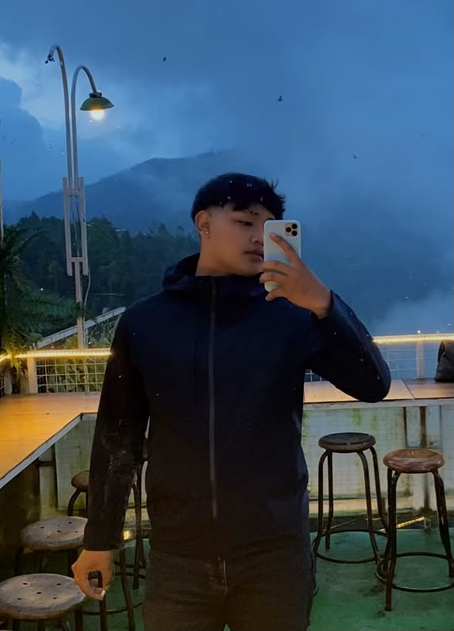
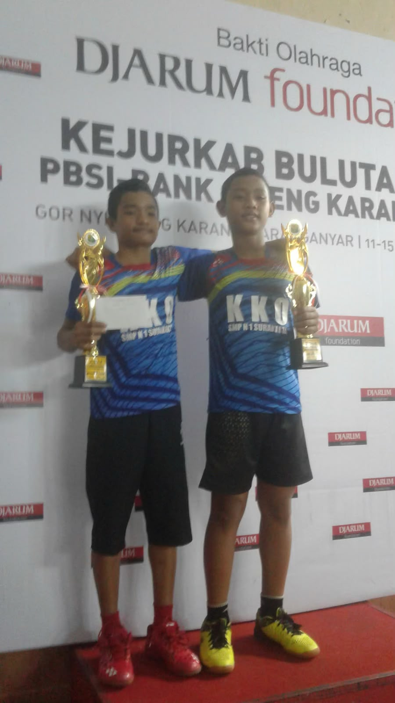

Pengembangan web
Membangun website dengan HTML, CSS, dan JavaScript. Fokus pada struktur yang rapi, animasi halus, dan tampilan yang responsif dari ponsel sampai desktop.
Terbuka untuk proyek
Web developer di Surakarta. Saya membuat website yang rapi, cepat, dan nyaman dipakai di layar apa pun.

Saya Fa’iq, web developer yang berbasis di Surakarta. Saya menyukai tampilan yang bersih dan kode yang ringan, supaya website terbuka cepat dan mudah dirawat. Saat ini saya kuliah di Politeknik Indonusa Surakarta dan terbuka untuk mengerjakan proyek website.
Menempuh pendidikan tinggi sambil mengerjakan proyek web.
Pendidikan menengah atas.
Membangun website dengan HTML, CSS, dan JavaScript. Fokus pada struktur yang rapi, animasi halus, dan tampilan yang responsif dari ponsel sampai desktop.

Pernah menjuarai pertandingan bulutangkis. Foto ini diambil di podium kejuaraan bulutangkis tingkat kabupaten di Karanganyar.
Sertifikat dari Cisco Networking Academy, terbit 18 Juli 2026. Mencakup perakitan dan perbaikan PC, perangkat laptop dan mobile, perawatan, serta standar keselamatan.
Lihat sertifikat (PDF)Ceritakan kebutuhan Anda. Saya akan membalas lewat WhatsApp atau email secepatnya.